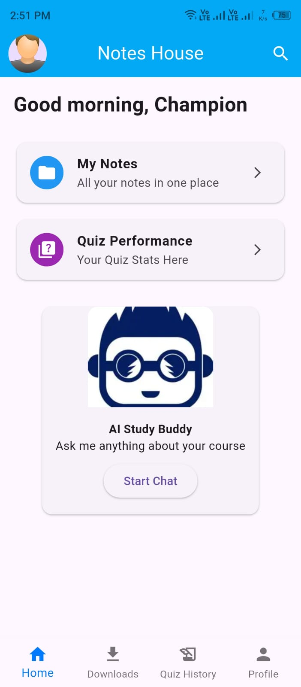
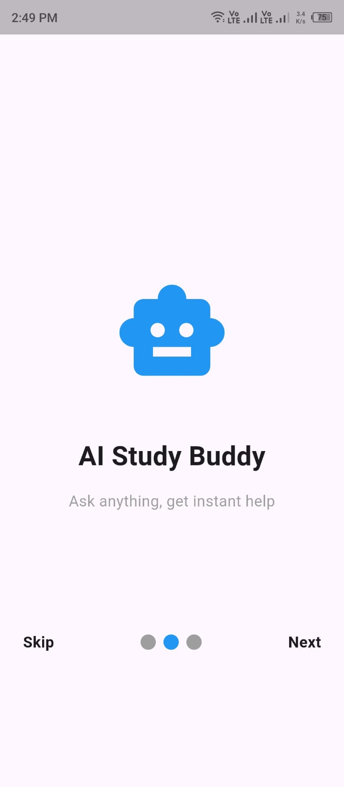
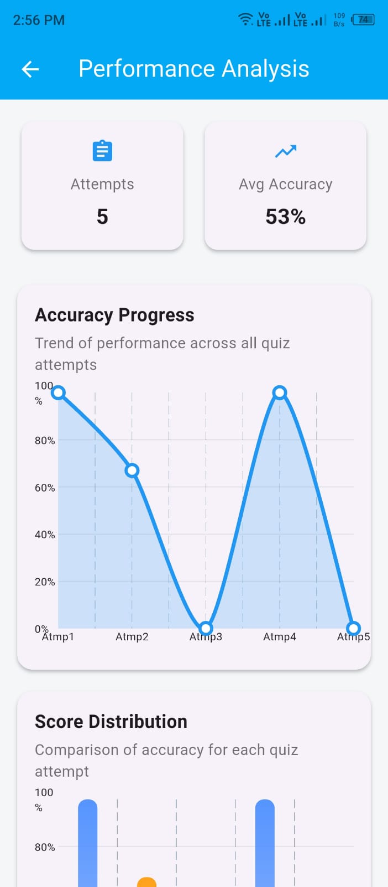
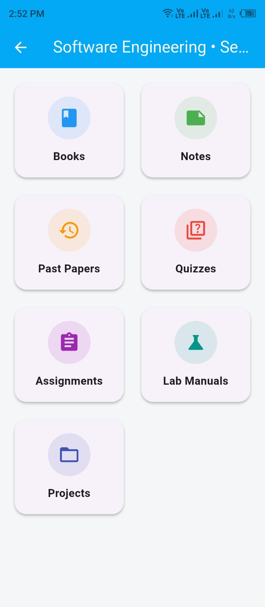
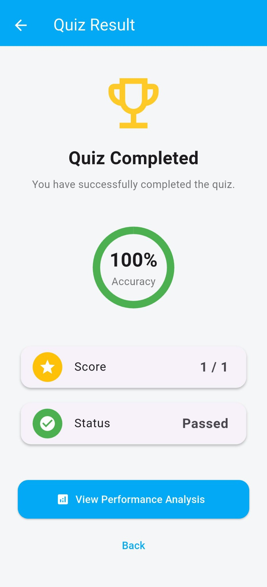

Final Year Project · BS Information Technology
Notes House
Your Study Companion
A centralized academic learning platform for university students — bringing study material, quizzes, performance analysis and AI-based academic assistance into one mobile experience.



AI Study BuddyDocument-aware assistance
PerformanceTrack quiz progress
At a glance
What we built.
One project, multiple academic workflows, connected through a single platform.
01 · THE PROBLEM
Study material exists.
Study material exists.
Finding the right material is the problem.
University students often rely on scattered sources to find notes, books, past papers, assignments and other academic resources. Material may be difficult to locate, poorly organized, outdated or unavailable for a specific course or semester.
Scattered Resources
Notes, books, past papers and assignments are often distributed across different platforms, groups and personal collections.
Difficult to Find
Finding material for a specific university, department, semester or subject can take unnecessary time.
Unorganized Material
Without a structured academic hierarchy, students may struggle to identify the right resource for their course.
Limited Practice & Feedback
Access to study material alone does not provide enough opportunities for quiz practice or performance tracking.
02 · Our solution
A centralized academic companion.
Notes House brings study material, quizzes, performance analysis, teacher contributions, admin moderation and AI assistance together in one mobile platform.
01
Find academic material through structured browsing and filtering.
02
Learn through PDFs, quizzes and document-aware AI assistance.
03
Track quiz attempts, accuracy and performance trends.
04
Moderate teacher submissions through admin approval workflows.


03 · Features
Built around real academic workflows.
Each role has a defined responsibility in the Notes House ecosystem.
01
Student
Find, read, download, practice and understand.
- Browse study material
- University / department / semester filtering
- In-app PDF reading
- Download Notes for Offline Use
- Annotate Downloaded Notes
- Quizzes & results
- Performance analysis
- AI Study Buddy
- Profile, history & notifications
02
Teacher
Contribute academic material and create quizzes.
- Educational email verification
- Select or Add university / semester / subject
- Upload notes, outlines and past papers
- Create subject-wise quizzes Manually
- Generate or Regenerate Quizzes via AI
- Edit or delete quizzes
- Track pending / approved / rejected uploads through Draft
- Receive admin feedback
03
Admin
Moderate the platform and maintain content quality.
- Review teacher submissions
- Approve, reject or request changes
- Manage verified teachers
- Review teacher-created quizzes
- Manage users and academic content
- Maintain quality and access control
Books
Notes
Past Papers
Quizzes
Assignments
Lab Manuals
Projects
04 · AI Study Buddy
Ask questions around your study material.
The project documentation defines AI chat around study material and opened PDFs. Our implemented AI service also includes document extraction, OCR fallback, embeddings and FAISS-based retrieval.
01DocumentPDF / DOCX / PPTX / image input
↓
02ExtractionText extraction with OCR fallback
↓
03EmbeddingsSentence Transformer vectors
↓
04RetrievalFAISS similarity search
↓
05AI responseRelevant context → AI Study
Buddy
RAG based AI Model
Not a generic chatbot
Not a generic chatbot
05 · Performance analytics
Quizzes become measurable learning.
Results are not just a score — the app presents performance through charts and analysis.
5Attempts
53%Avg. Accuracy
The real UI includes accuracy progress, score distribution and a performance breakdown. Quiz results also show score, accuracy and pass status.
View the real screens →
06 · Real app gallery
See the interface we actually built.
These are the supplied Notes House screens. Click any screen to view it larger.
07 · System architecture
How the pieces connect.
The website distinguishes the documented system design from the current implementation details we actually worked on.
Flutter Mobile AppDart · UI / UX
Node.js + ExpressAPI · auth verification · file / backend logic
FirebaseAuthentication · Firestore · FCM
Python Flask AI ServiceDocument processing · OCR · RAG
FAISSVector similarity retrieval
AI APIResponse generation
08 · Deployment
From local development toward AWS EC2.
AWS EC2 is the deployment target we are adding to the project. The final site will show the verified deployment state once the backend is running there.
01AWS EC2Cloud compute target for the backend
services.
02DockerContainerized backend / AI services for
reproducible deployment.
03Node.js APIExpress backend connecting the mobile
app to services.
04Python AI/RAGFlask service for document processing
and AI retrieval.
Flutter→AWS EC2→Node.js→Python
RAG→AI Service
09 · Technology stack
The technologies behind Notes House.
FrontendFlutterDart
BackendNode.jsExpress
AI servicePythonFlask
DatabaseFirebaseAuthentication ·
Firestore
NotificationsFCMFirebase Cloud
Messaging
RetrievalFAISSVector similarity
search
EmbeddingsSentence
Transformersall-MiniLM-L6-v2 in the AI service
DeploymentDockerAWS EC2 target
10 · Quality & security
Tested beyond the interface.
The project report covers unit, functional, integration and performance testing.
Unit Testing
Study Material Search, Quiz Evaluation, AI Chat Processing, File Upload Validation and Admin Approval Workflow.
Functional Testing
Filtering, quiz calculations, performance charts, AI responses and upload/approval behavior.
Integration Testing
Material ↔ database, quiz ↔ analytics, AI ↔ PDF reader and upload ↔ admin panel.
Performance Testing
Response time, stability, reliability, database performance and Android Profiler monitoring.
AuthenticationFirebase Authentication
AuthorizationRole-based access
ModerationAdmin approval workflow
API protectionAuthenticated backend requests
11 · DEVELOPMENT JOURNEY
From idea to implementation.
From defining the problem to building, testing and preparing Notes House for deployment.
01
FOUNDATION
Planning
Project proposal, objectives and initial Software Requirements Specification.
02
DISCOVERY
Requirements
Requirements gathering, UI/UX planning and database structure for the Notes House platform.
03
SYSTEM DESIGN
Analysis & Design
Defining system modules, architecture, navigation, database relationships and overall application structure.
04
CORE BUILD
Development
Building the working platform with student access, teacher uploads, admin workflows, PDF reading, quizzes, performance analysis and AI-powered assistance.
05
REFINEMENT
Debugging & Testing
Functional, integration and performance testing followed by debugging and refinement of the implemented modules.
06
DELIVERY
Deployment & Presentation
APK preparation, AWS EC2 deployment work, project documentation and final presentation and defense preparation.
12 · Go deeper
Download
Documentation
Read the complete project documentation.
The full Notes House report contains the requirements, system design, implementation, testing, deployment, evaluation and future work.
13 · The people behind Notes House
FAppCrafters.
Three developers, different responsibilities, one Final Year Project. The profile area also acts as a professional gateway to each member's own work.
HA
GROUP LEADER · BACKEND
Hasnat Ahmad
Backend development, Firebase services, API integration, teacher uploads, admin approval flow, secure file handling and frontend/backend communication.
FlutterPythonFirebaseNode.jsData
AnalyticsAI/Data Science
AH
UI / UX · DOCUMENTATION
Abdul Hanan
Project documentation, front-end UI/UX design, screen layouts, graphic design and helping structure the app for a simple user experience.
UI/UXFlutterDocumentationDesignCyberSecurity
HAR
AI / RAG
Hafiz Abdul Rahman
AI chatbot module, AI API integration, document-based retrieval, response validation, testing and debugging across the application.
PythonAI/MLRAGFAISSTestingDataScience
Prof. Kashif Riaz
FYP Supervisor
Academic guidance and supervision throughout the project.Sir Asif Sohail
FYP Evaluator
Project evaluation and academic assessment.
14 · Try Notes House
Download APK
↓
Take the project with you.
Download the Android APK directly from this project showcase.